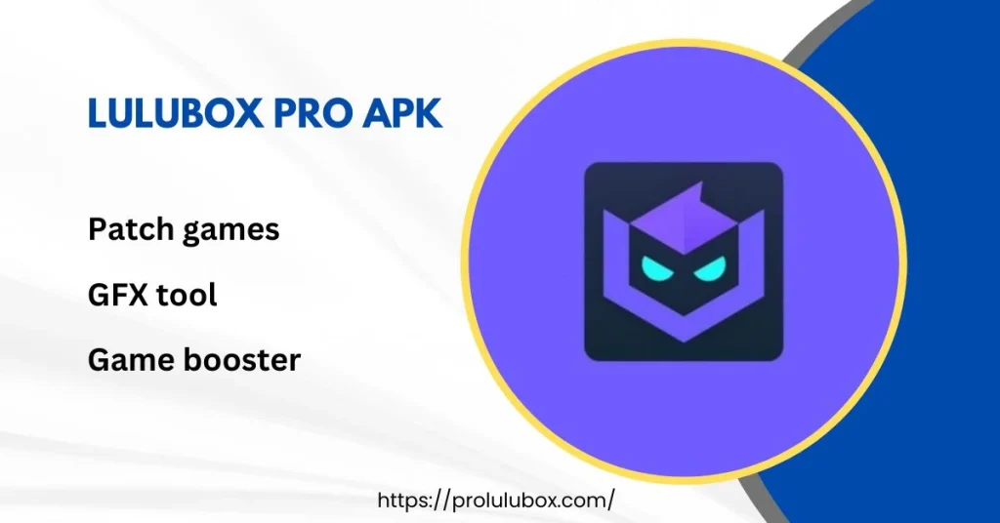

In today’s world, everyone loves gaming! But when you hit that point where you're stuck in a game and need a little boost—like getting skins, coins, or extra lives—things can get frustrating. That’s where Lulubox APK comes in handy. It’s like the fairy godmother for mobile gamers, waving its wand to unlock a variety of cool features in your favorite games. In this article, we'll dive deep into Lulubox APK, explaining what it is, how to use it, and why it might just become your new best friend in the gaming world.
Lulubox APK is an Android application that allows you to unlock premium features in popular mobile games. In short, it gives you a power-up! Think of it as a virtual toolbox that helps you modify your gaming experience, whether it’s getting free skins for PUBG, unlimited coins in Subway Surfers, or unlocking premium features in other popular games.
The best part? It’s super easy to use, even for people who aren't tech-savvy. So, if you’re looking to take your gaming to the next level without breaking a sweat (or your wallet), Lulubox APK could be the golden ticket you need.
Now, before you get too excited and start downloading everything in sight, here’s a little disclaimer: Lulubox APK is technically a third-party app, which means it's not officially supported by the developers of the games you play. So, while it’s a fun tool, use it at your own risk.
The big question: Why do so many gamers love Lulubox? Well, it’s simple. It’s like having cheat codes without having to dig through long, complicated game manuals (remember those?). Lulubox gives you the kind of in-game advantages that would usually take hours to achieve—like endless coins, skins, or lives—all in just a few clicks.
Here’s why it’s become so popular:
Now that you’re sold on the idea of Lulubox, how do you actually get it on your device? Here’s a quick step-by-step guide:
Ah, the million-dollar question: Is Lulubox safe? Well, this depends on how you define “safe.” On the one hand, Lulubox doesn’t require rooting your phone, which is a huge plus in terms of avoiding potential damage to your device. But, since it’s a third-party app, there are always risks involved when using it.
For one, there’s the possibility of getting banned from certain games, especially if the game developers catch wind of the fact that you’re using an unofficial app to modify their game. It’s kind of like sneaking candy into a movie theater—fun until you get caught. So, if you’re a die-hard fan of a particular game, you might want to think twice before using Lulubox.
That said, many users have reported using Lulubox without any issues, so the risks might not be as high as they seem. As long as you’re careful and don’t go overboard, you should be fine.
While Lulubox APK offers some pretty cool features, it’s important to remember that not all games allow third-party tools. Some game developers frown upon using apps like Lulubox to get ahead in the game, and they could potentially ban your account if they find out. So, it’s always a good idea to read the terms of service for the game you're playing before diving into the world of Lulubox.
Also, be cautious when downloading the APK file—make sure it’s from a trusted site. The last thing you want is to accidentally download something sketchy and end up with malware on your device. That would definitely take the fun out of your gaming experience.
In a nutshell, Lulubox Pro Max is like having a cheat code for your favorite mobile games. It’s easy to use, doesn’t require rooting your phone, and works with a wide variety of popular games. Whether you’re looking to get free skins, optimize game performance, or unlock premium features, Lulubox has got you covered.
But (and this is a big "but"), it’s important to use it responsibly. Don’t go overboard with it, and always be aware of the potential risks. After all, getting banned from your favorite game is no fun, and nobody wants to turn their phone into a brick because they downloaded the wrong file.
So, if you decide to give Lulubox a shot, have fun, game smart, and may the odds be ever in your favor!